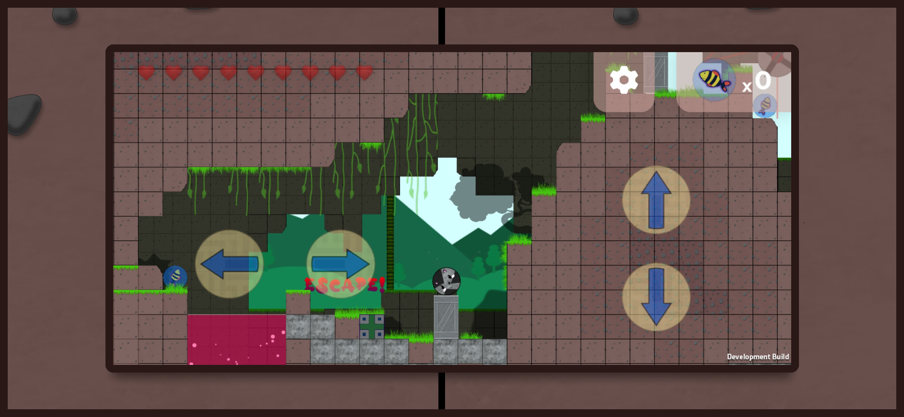
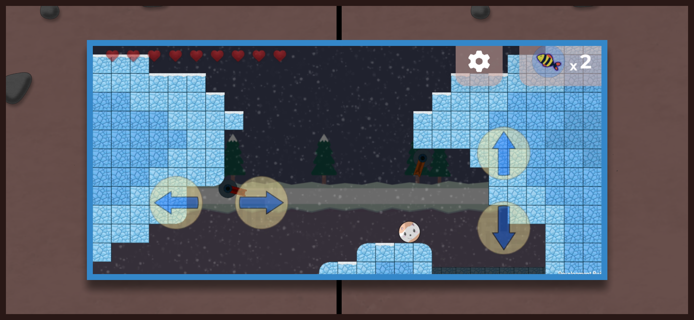
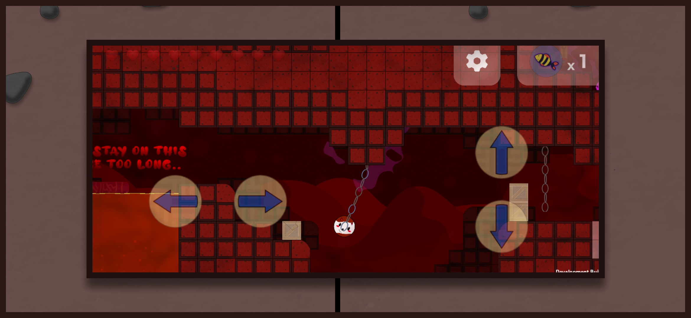
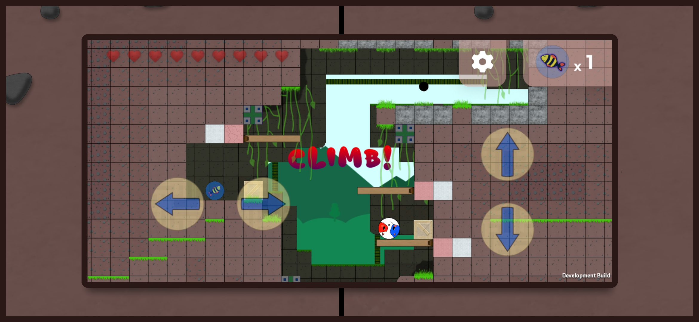
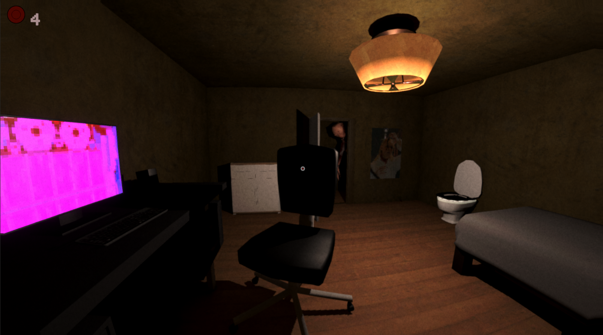
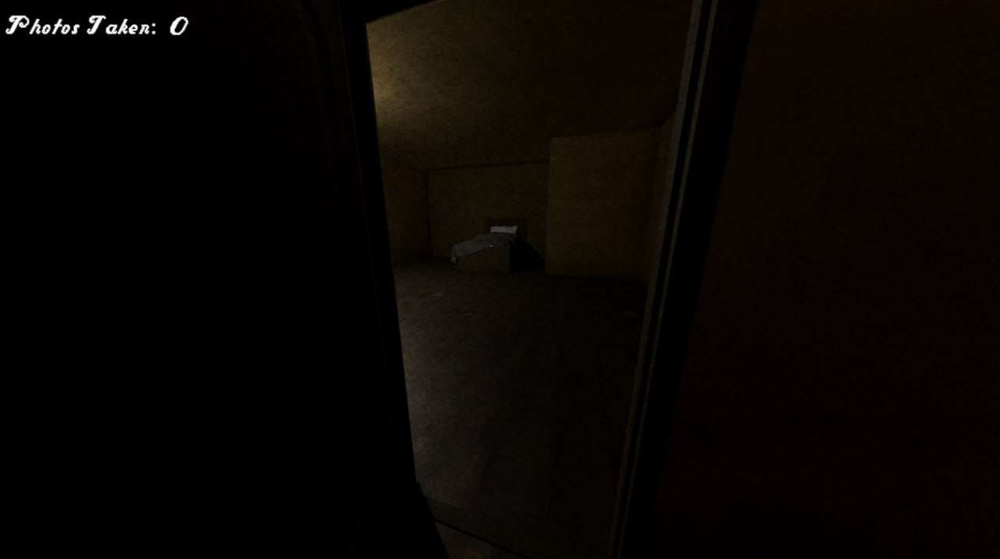
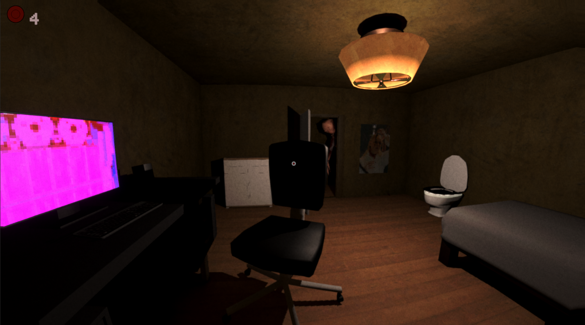
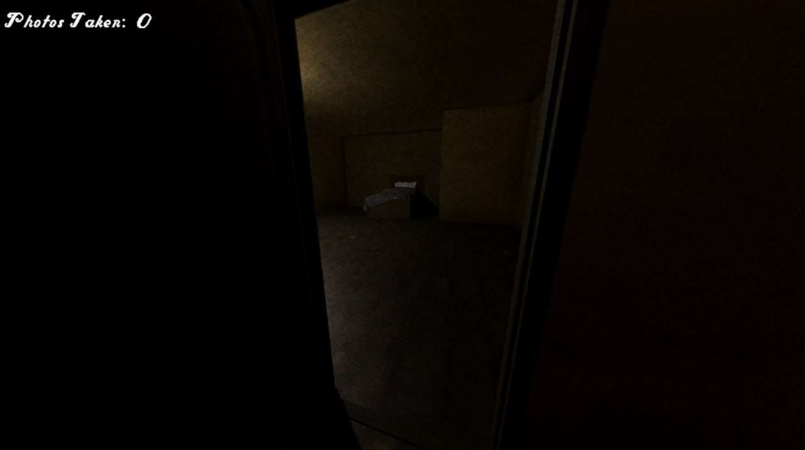

Tails of a Cat
For this project, I made it as the sole, independent developer, as such I made:
the
sprites, the code base, the levels, the design, etc. This project was made in Unity, from 2022 to early-mid
2023: Travel through 3 detailed worlds, and transform into different materials and use their abilities to
overcome different levels and enemies.

 
